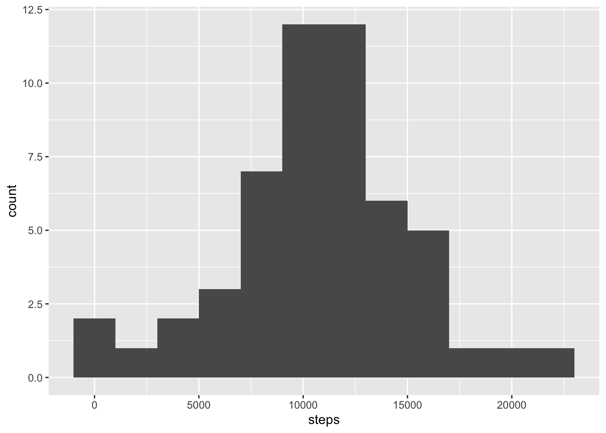
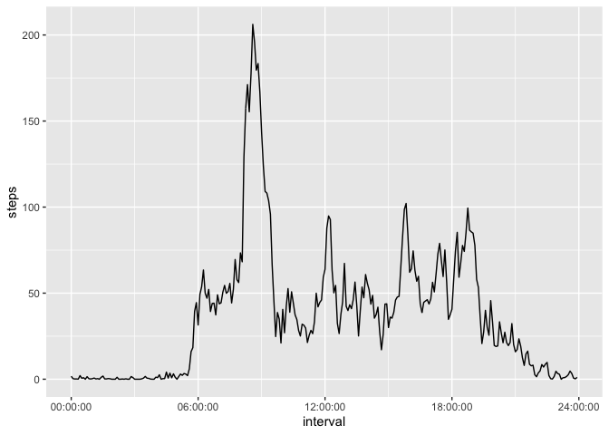
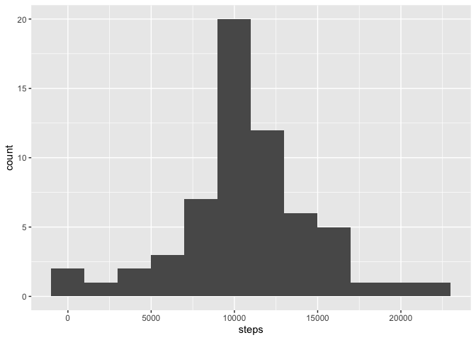
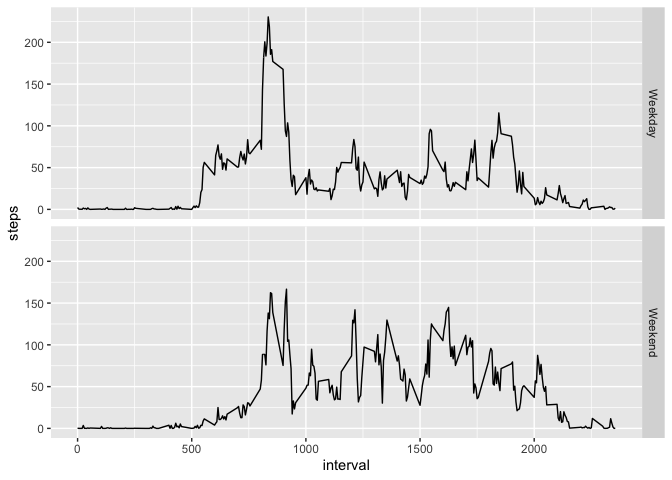

First the activity data is loaded. Data contains the date and daily steps in 5 minute slots.
library(dplyr)
library(ggplot2)
library(hms)
data <- read.csv('activity.csv')Then the total daily steps is calculated by day.
steps <- data %>%
filter(!is.na(steps)) %>%
group_by(date) %>%
summarise(steps=sum(steps, na.rm=T))A histogram of the summary data.
ggplot(steps, aes(x=steps)) +
geom_histogram(binwidth=2000)
The mean steps by day.
mean(steps$steps)## [1] 10766.19And the corresponding median of the daily steps.
median(steps$steps)## [1] 10765Next we calculate the average steps for each time slot.
steps_by_interval <- data %>%
group_by(interval) %>%
summarise(steps=mean(steps, na.rm=T))And we plot the avverage steps taken by time.
ggplot(steps_by_interval %>% mutate(interval=hms(hours=as.integer(interval / 100), minutes=interval %% 100)),
aes(x=interval, y=steps)) +
geom_line() +
scale_x_time(breaks=sapply(c(0,6, 12, 18, 24), function (hour) { hms(hour=hour) }))
The 5 minute interval with maximum steps can be obtained.
steps_by_interval[which.max(steps_by_interval$steps),]## # A tibble: 1 x 2
## interval steps
## <int> <dbl>
## 1 835 206.The results identifies 08:35 as the most active 5 minute interval on average with about 206 steps taken.
There are some missing values in the dataset. The total amount of rows with missing step count can be obtained.
data %>%
filter(is.na(steps)) %>%
summarise(count=n())## count
## 1 2304We will next fill in the missing values with daily averages from corresponding interval for the missing step counts.
imputed <- data
for (i in 1:nrow(imputed)) {
if (is.na(imputed[i,'steps'])) {
imputed[i,'steps'] <- first(steps_by_interval[steps_by_interval$interval==imputed[i,'interval'],]$steps)
}
}Then we revise the daily steps with imputed data.
steps_imputed <- imputed %>%
filter(!is.na(steps)) %>%
group_by(date) %>%
summarise(steps=sum(steps, na.rm=T))And draw a corresponding histogram.
ggplot(steps_imputed, aes(x=steps)) +
geom_histogram(binwidth=2000)
And have a look at the average and median values.
The mean steps by day.
mean(steps_imputed$steps)## [1] 10766.19And the corresponding median of the daily steps.
median(steps_imputed$steps)## [1] 10766.19As we can see, the missing data doesn’t have a big meaning. The average stays exactly same and median changes only a little.
Next we map dates to either weekdays or weekend days to spot differencies in behavior.
day_data <- imputed %>%
mutate(day=weekdays(as.Date(date))) %>%
mutate(wd=recode_factor(day, 'Monday'='Weekday','Tuesday'='Weekday','Wednesday'='Weekday','Thursday'='Weekday',
'Friday'='Weekday','Saturday'='Weekend','Sunday'='Weekend')) %>%
group_by(wd, interval) %>%
summarise(steps=mean(steps))The we plot the amounts by day type.
ggplot(day_data, aes(x=interval, y=steps)) +
geom_line() +
facet_grid(wd ~ .)